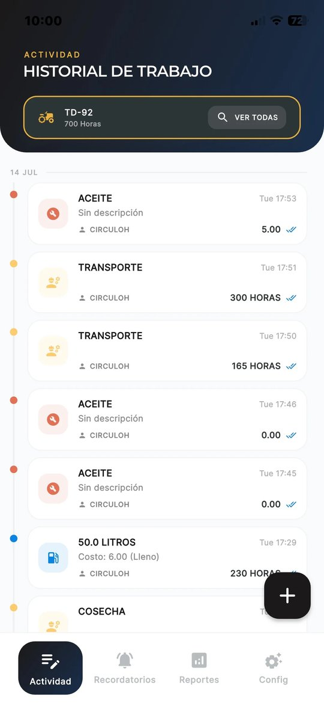
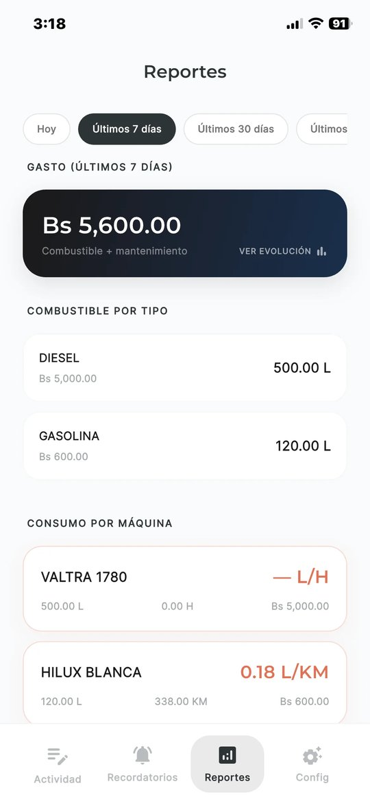

Gestión de flota agrícola con IA
Tu diésel es caro.
Tu diésel es caro.
Dejá de perderlo.
Tracktor ordena el registro de cada máquina y te avisa del desvío el mismo día, no a fin de mes.
Todos los días se pierde diésel. Y casi nunca se ve a tiempo.
35%del costo operativo de una empresa agrícola es combustible.
5–15%de ese diésel se pierde por mala gestión. En promedio, uno de cada diez litros.
5.600 Lpor año en una operación de 700 ha: unos USD 5.600 que se van del tanque.*
¿A dónde se va?
- Desvíos: litros que salen del tanque y no llegan a ninguna máquina.
- Registros con errores: planillas a mano que nadie cruza con el campo.
- Horas que no se trabajaron: jornadas infladas y manejo que quema de más.
- Fallas sin detectar: una máquina que consume de más avisa antes de romperse.
¿Por qué no lo ves?
- Día 1Se carga diésel y el operador manda una foto por WhatsApp.
- Días despuésAlguien pasa los datos a Excel, a mano.
- Fin de mesLlega el reporte. Ya no hay nada que corregir.
Con Tracktor, el desvío aparece el mismo día.
* Ejemplo: 700 ha × 80 L/ha (MDRyT) = 56.000 L por año, con 10% de pérdida y diésel a ~10,6 Bs/L (≈ USD 1).


La solución
Tracktor cierra la fuga.
- El operador registra en segundos: por voz con IA o en dos toques, aunque no haya señal.
- Cada dato llega verificado: foto tomada en la app, GPS y hora. Litros contra horas, horómetro contra el registro anterior.
- Vos ves el desvío en tu Dashboard: consumo real por máquina y operador, costo por hectárea y alertas.
Otros registran lo que el operador dice. Tracktor verifica lo que hizo. Sin sensores ni hardware en las máquinas: solo el celular del operador.